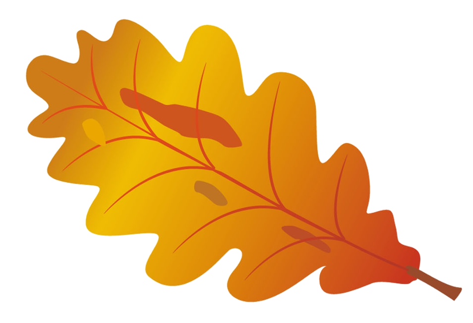
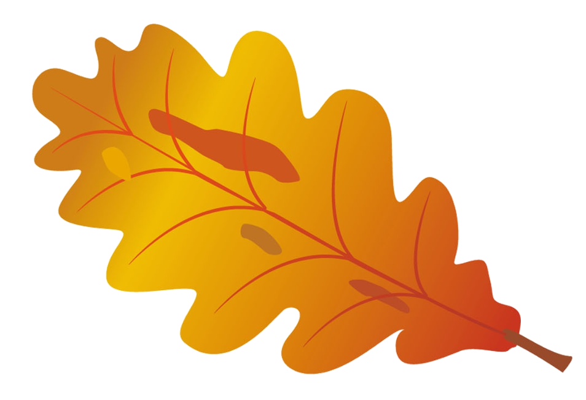

Najdi strom v okolí, který Tě zajímá
Aplikace je určená k vyhledání zajímavých stromů


 



Jak na to
- Vytvořte si bezplatný účet
- Přidávejte, editujte a odstraňujte stromy
- Sledujte, co všechno jste již zvládli dokončit